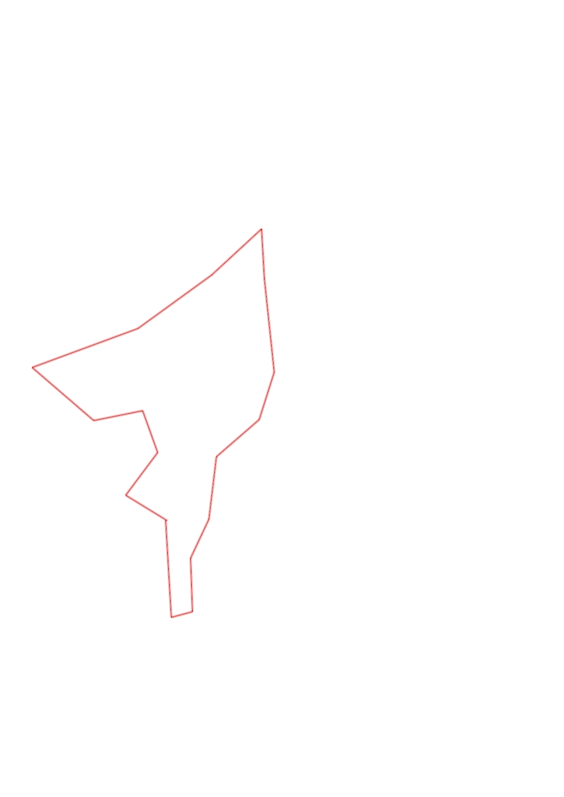
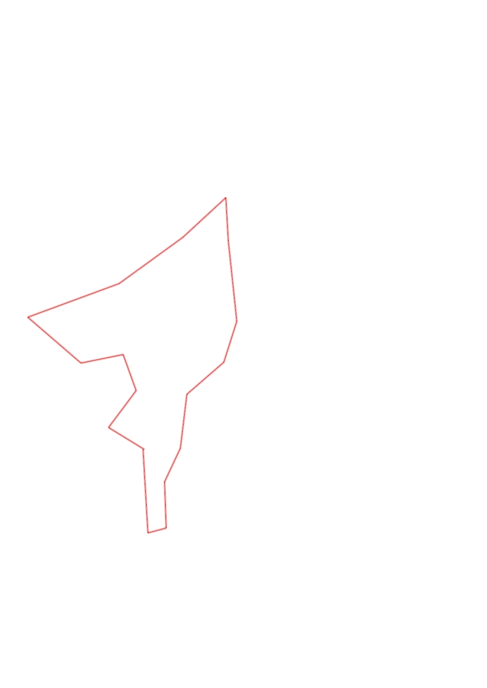

| Control |
Points |
Time Punched |
Distance |
Your Time |
Pace |
Place |
Fastest Time |
Median Time |
% Behind Fastest |
| 31 |
30 |
|
0.54 |
0:04:20 |
08:01 |
3 / 4 |
0:04:11 |
0:04:19 |
3% |
| 42 |
40 |
|
0.12 |
0:01:08 |
09:26 |
2 / 9 |
0:00:52 |
0:01:49 |
30% |
| 37 |
30 |
|
0.3 |
0:02:42 |
09:00 |
3 / 4 |
0:02:25 |
0:02:35 |
11% |
| 63 |
60 |
|
0.24 |
0:03:05 |
12:50 |
2 / 4 |
0:03:00 |
0:03:14 |
2% |
| 41 |
40 |
|
0.35 |
0:03:33 |
10:08 |
1 / 2 |
0:03:33 |
0:03:36 |
0% |
| 91 |
90 |
|
0.32 |
0:04:09 |
12:58 |
1 / 6 |
0:04:09 |
0:04:33 |
0% |
| 36 |
30 |
|
0.28 |
0:03:40 |
13:05 |
3 / 4 |
0:01:58 |
0:03:32 |
86% |
| 34 |
30 |
|
0.53 |
0:03:43 |
07:00 |
2 / 3 |
0:03:06 |
0:03:43 |
19% |
| 39 |
30 |
|
0.28 |
0:02:56 |
10:28 |
4 / 7 |
0:01:51 |
0:02:56 |
58% |
| 65 |
60 |
|
0.38 |
0:03:29 |
09:10 |
3 / 4 |
0:03:02 |
0:03:17 |
14% |
| 53 |
50 |
|
0.51 |
0:04:41 |
09:10 |
3 / 4 |
0:03:48 |
0:04:15 |
23% |
| 92 |
90 |
|
0.63 |
0:08:08 |
12:54 |
2 / 3 |
0:06:58 |
0:08:08 |
16% |
| 72 |
70 |
|
0.46 |
0:06:32 |
14:12 |
3 / 4 |
0:02:51 |
0:04:56 |
129% |
| 58 |
50 |
|
0.28 |
0:02:38 |
09:24 |
2 / 6 |
0:02:22 |
0:03:34 |
11% |
| 51 |
50 |
|
0.25 |
0:01:43 |
06:52 |
1 / 9 |
0:01:43 |
0:02:53 |
0% |
| 35 |
30 |
|
0.3 |
0:02:11 |
07:16 |
2 / 8 |
0:02:08 |
0:02:40 |
2% |
| Finish |
0 |
|
0.27 |
0:01:24 |
05:11 |
3 / 10 |
0:01:23 |
0:01:33 |
1% |
Total Distance Covered: 6.04km
Points Scored: 780
Late Penalty: -20
Final Score: 760
Total Time: 1hours 0minutes 2seconds
Efficiency: 125.83 points/km
 
